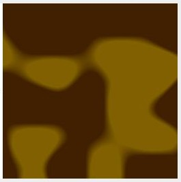
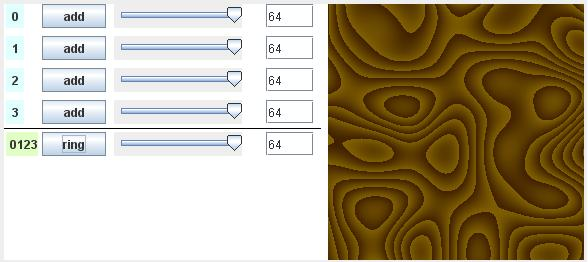

This section looks at various things that can happen when you expand the returned noise values beyond the range of -1 to 1, then use another operation to bring the values to normalization. One method uses a form of modular division, resulting in a set of rings through the color space, sometimes likened to tree rings. You will also see an alternative method for bringing noise values into normalization range: a clamping technique which produces an effect that reminds me of over-exposed light.
The following code will create a BufferedImage that
matches the above graphic. A template has been provided (see the
"Export" button) where you save code that will generate a texture and
run it as a stand-alone Java program. Code lines that are different
from previous examples are bolded.
BufferedImage image = new BufferedImage(width, height,
BufferedImage.TYPE_INT_ARGB);
WritableRaster raster = image.getRaster();
int[] pixel = new int[4];
pixel[2] = 0; // blue, none used
pixel[3] = 255; // alpha channel, always opaque
// dark brown = Color(64, 32, 0)
int redA = 64;
int greenA = 32;
// medium brown = Color(128, 96, 0)
int redB = 128;
int greenB = 96;
int rings = 4;
double noiseValue;
for (int y = 0; y < height; y++)
{
for (int x = 0; x < width; x++)
{
noiseValue = SimplexNoise.noise(x/128f, y/128f);
noiseValue *= rings;
noiseValue = noiseValue - Math.floor(noiseValue);
pixel[0] = (int)(noiseValue * (redB - redA) + redA);
pixel[1] = (int)(noiseValue * (greenB - greenA)
+ greenA);
raster.setPixel(x, y, pixel);
}
}
Rings
In the above sample code, at the heart of the for
loops, the variable noiseValue is given a value in the
range of -1.0 to 1.0 by the Simplex noise function, exactly as we
had done in the previous tutorial section. Then, this value is
amplified to the range of -4 to 4 in the very next line, by
multiplying it by the rings variable.
The value is then brought back into normalization range by using a function similar to modular division by 1, which creates a remainder that repeatedly cycles through the range 0 to 1.
Instead of modular division by one, we use the Math.floor() function, in which the return value is always the first integer less than or equal to the argument. When the floor value is subtracted from the original noiseValue, the result will always be in the range 0 (inclusive) up to but not including 1. A similar result occurs via modular division by 1. But with modular division, you must make special provisions for negative noise values, as the remainders will also be negative and will progress in the opposite direction than the remainders of positive noise values. The following chart illustrates this.
Fig 1. Comparison of modular division by one and the subtraction
of the floor value to achieve cycling in the range 0 to 1
noiseValue nV % 1 nV - floor(nV)
---------- ------ --------------
-1.2 -0.2 0.8
-1 -0 0
-0.8 -0.8 0.2
-0.6 -0.6 0.4
-0.4 -0.4 0.6
-0.2 -0.2 0.8
0 0 0
0.2 0.2 0.2
0.4 0.4 0.4
0.6 0.6 0.6
0.8 0.8 0.8
1 0 0
1.2 0.2 0.2
[According to Stefan Gustavson: the following achieves the same results, but is faster than the Math.floor() function:
n = (n < 0)? (int)(n + 1) : (int)n;
But I will leave the floor function in the demo code for the sake of clarity.]
Of course, you may want to have the color rings oriented in opposing directions, in which case modular division by 1 would be perfectly appropriate. Or one might translate the entire range into the positive number space (by adding 4 in this case) prior to the modular division and thus avoid the need to deal with negatives. This just goes to show a basic truth, which is that there are innumerable techniques for operating on the noise values, as long as you eventually end up with a range that can be mapped to legal colors.
In this example we map to a color range bounded by two shades of brown. The darker brown has a Red value of 64 and a Green value of 32. The lighter has a Red value of 128 and a Green value of 96. To scale our normalized values, we use a standard formula: multiply the normalized value by the difference of the two target values, and add the result to the first value.
This following line of code from the example does this for the green channel:
colorValue = (int)(noiseValue * (greenB - greenA) + greenA);
In our example, the desired range is 96 - 32 = 64. Thus we
multiply the normalized noiseValue by 64, then add it
to 32. Thus, the result will equal 32 if the noise Value is 0 or 96
if it is 1, or an intermediate green value for all noise values in
between 0 and 1.
Clamps
Another way to ensure that we don't try to assign out-of-range
values to pixel colors is to run the noise Values through a
min and a max function.
noiseValue = Math.max(noiseValue, 0);
noiseValue = Math.min(noiseValue, 1);
colorValue = (int)(noiseValue * (greenB - greenA) + greenA);
[Some prefer to combine the Max and Min functions into a single line, though I suspect the latest Java compilers automatically handle this optimization for us.]
In the following figure, we use the same the noise values that
have been multiplied by rings, and range from -4 to 4.
Only now, only the values that are within the range 0 to 1 result in
intermediate brown colors. Values from -4 to 0 display the darker
brown, and values from 1 to 4 display as the lighter brown.
Fig. 2, Clamping data that ranges from -4 to 4, to 0 to 1 with the use of Min and Max functions.
Using the Texture Tool example
Because of a design decision with the Texture Tool, I had to be a little tricky to create the "overflow" condition that allows us to transform the data to where the rings or clamp effects are possible. You will notice that the Tool presents four channels of the graphic, and that all four channels are set to "64" in the mixer.
Fig. 3, Mixer settings for the Rings effect.
The mixer programmed so that the actual value that is used
is the number present on the slider divided by 64. Thus a single
channel can't cause an overflow. To achieve an overflow, we have the
four channels each add it's 100% to a total sum. This is equivalent
mathematically to the code example where we multiply the noise value
by a rings factor of 4. If you draw down the individual
slider volumes, you can see the rings effect lessen.
You can also lessen the number of rings by selecting the "smooth" normalization in the contributing channels. If all the channels are set to "(v+1)/2", then the data will range purely from 0 to 4, allowing a max of 4 rings. With "none" selected, the data can range from -4 to 4, allowing a maximum of 8 rings.
Note that 2nd stage of the mixer is set to "ring". With this setting, the Math.floor function is performed on the data from stage 1. There are two other settings on this slider. One can select "add" or "lerp". With "add", all the 2nd stage tracks being combined have their individual track values added into a grand sum that is then clamped. With "lerp" the contributing tracks are averaged together, their weights being determined by the values of the stage 2 sliders.
The light green label at the left of the stage 2 slider lists which tracks are contributing. The selection of contributing tracks is determined automatically, based upon the Color Bar selected for the channel (top color gradient graphic on the channel stacks in the top half of the tool). The 2nd stage also splits out channels by the function selected in the stage 1 mixer (e.g., "add", "lerp", "sin", "xDim", "yDim"--choices available as of this iteration).
One last note: one can cause an "underflow" by selecting "none" instead of either the "smooth" or "turbulent" normalization options, via the channel radio buttons. Selecting "none" allows values from -1 to 0 to reach the function which converts the numbers to color data. If the 2nd stage setting is "ring", the underflow will appear as a single ring. If the 2nd stage setting is either "add" or "lerp" the data will be clamped and all values below zero will be reported as zero.